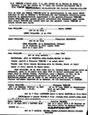

Genealogie_Complete

Graphique personnel
Parents
| Père | Date de naissance | Mère | Date de naissance |
|---|---|---|---|
 Annet COLLAINE Annet COLLAINE |
 Sans nom (COLLAINE) Sans nom (COLLAINE) |
Conjoints
| Conjoint | Date de naissance | Enfants |
|---|---|---|
| Anne JOLY |
1816 | Xy COLLAINEBarthelemy COLLAINEJeanne COLLAINEClaude COLLAINELouis COLLAINE |
Événements personnels
| Type d’événement | Date | Lieu | Description |
|---|---|---|---|
 Naissance Naissance |
1800 | ||
| Profession |
Tailleur de pierres | ||
| Profession |
Tailleur de pierres | ||
| Profession |
Tailleur de pierres | ||
| Profession |
Séminariste | ||
| Profession |
Séminariste | ||
| Profession |
Séminariste | ||
| Décès |
1873 |
Notes
| avait été séminariste, puis professeur et avait quitté le séminaire pour se marier avec Anne Joly à La Machine (Nièvre). Ensuite, il avait été déporté à Boufarik et Lambèse, comme ancien séminariste, suite au coup d’Etat de Louis Napoléon Bonaparte, pendant que sa femme et ses enfants avaient été déplacés à Firminy, leurs biens confisqués. |
| Il était Tailleur de Pierre, très instruit, avait beaucoup d’influence sur les ouvriers et avait été arrêté comme Chef de la Société Secrète de La Machine et de couleur politique Rouge démocrate, condamné à Algérie Plus, et déporté à Boufarik. Ensuite, il avait obtenu une grâce en 4/1853 et était revenu à La Machine sous surveillance. Son dossier comportait une lettre datée de 4/1856, dans laquelle il sollicitait l’autorisation de rejoindre son fils qui travaillait sur le chemin de fer à St Martin d’Estreaux (Loire). Le Préfet de la Loire a refusé au motif du trop grand nombre de proscrits à surveiller. Son dossier portait la mention : disparu sans laisser d’adresse. |
| Jean Collaine séjourne 15 ans dans la Nièvre, puis en 1851 il est arrêté comme "chef d’une société secrète", déporté en Algérie et revient en France en 1854, après une grâce accordée par Napoléon III. |
| Jean Collaine dans la Nièvre (1836-1851) Vers Précédent Chap. 02 - 2 siècles en Combraille Jean Collaine séjourne depuis 15 ans à La Machine, Nièvre (ville minière située dans la forêt domaniale des Minimes) lorsqu’il est arrêté en 10/1851 comme Démocrate rouge et expulsé vers l’Algérie, sa famille déplacée dans la Loire et ses biens confisqués.. La foret Domaniale des Minimes s’étend entre Decize et La Machine. Dans cette forêt se trouve le Couvent de Minimes, racheté en 1629 par l’Ordre des Minimes et reconstruit sur l’ancien Prieuré. Les Houillères de la Forêt des Minimes exploitées en 1690 appartenaient aux Ducs de Nevers et à l’ordre des Minimes. La Machine et Decize furent des lieux d’extraction de ces mines. Au 19ème siècle, autour de ces villes minières, vont se construire des cités minières pour héberger les ouvriers et les cadres des mines (environ 900 logements répartis sur 3 cités) . Jean Collaine arrive donc seul dans la Nièvre (soit après 1825 ou 1836) et va résider 15 ans dans cette ville. Il est déjà Maître Maçon et Tailleur de Pierre et a certainement participé aux constructions des cités minières de La Machine. Il fait la connaissance de sa femme Anne Joly vers 1836. A-t-il quitté le séminaire depuis longtemps ou bien au moment où il rencontre sa future femme à qui il fait 2 enfants avant de se marier. Barthélemy (né en 1837) et Jeanne (née en 1839) seront reconnus lors du mariage de leurs parents en 1841. 2 autres fils naissent : Claude (en 1842) et Louis (en 1844). - Selon le Cadastre de la Creuse - Registre 3Q15/344 - Table des acquéreurs Le 13/1/1841, Jean Collaine revend à son frère Jean-Baptiste, un lopin de terre (portion de pré de 16 ares pour 400frs) qu’il détenait à Fontanières (sans doute depuis le décès de son père en 1825 ou de sa mère en 1833). Ceci, juste avant son mariage du 3/2/1841. JPG - 57.1 ko Fontanieres Vente pre Jean COLLAINE 1841 p1 JPG - 55.9 ko Fontanieres Vente pre Jean COLLAINE 1841 p2 - Selon l’état des salaires de la Creuse en 1841 - Registre 10M8 Le salaire journalier d’un tailleur de pierres en 1841 dans la Creuse étant de 2frs , la vente du lopin de terre de 400 frs correspond environ à 6/7 mois de salaire de Jean Collaine. JPG - 88.5 ko Creuse : Salaires 1842 Etait-il Compagnon ? : Le fait qu’il soit Maître Maçon pourrait indiquer un grade dans le Compagnonnage (exécution d’une œuvre), sa signature particulière (inscrite dans un cercle et se termine par une croix elle-même encerclée) pourrait être la marque d’un compagnon et un rappel de son passé de séminariste. JPG - 15.9 ko J.Collaine signature |
| 3b. Expulsion de Jean Collaine en Algérie (1851-1854) Vers Précédent 3a. Jean Collaine dans la Nièvre (1836-1851) - Activités politiques de Jean Collaine vers 1848-52 La Nièvre est un département « rouge » où les républicains se sont organisés en sociétés secrètes (réunions d’association interdites) comme dans toute la France, pour défendre la jeune république de 1848. Jean Collaine doit faire de la politique à cette époque ou être en rapport avec ces groupes politiques qui s’organisent pour les futures élections de 1852. Les documents de police relatant son arrestation en 10/1851 indiquent : « est souvent dans les cabarets » (pour des réunions politiques) et dans une lettre de demande de grâce rédigée en 5/1852 il dit : « avoir refusé de voter en 48 pour Cavaignac, et avoir distribué des bulletins pour Louis Napoléon Bonaparte » sans doute parce que Cavaignac venait de faire tirer sur les manifestants à Paris. Mais l’élection de LNB en 1848 sera immédiatement suivi de mesures de restrictions du suffrage universel (obligation d’être domicilié 3 ans, ce qui excluait les itinérants soit environ 3 millions d’ouvriers..) et sera certainement la cause de son engagement avec les républicains. - Arrestation à 51 ans L’état de siège de la Nièvre est décrété le 21/10/1851. 7 jours plus tard, le 28/10, Jean Collaine est arrêté en tant que chef de Société Secrète en prévision du coup d’état de Louis Napoléon Bonaparte de 12/1851 [1]. Il est conduit à la prison de Nevers le 29/10/1851 (selon le registre d’écrou de la prison). [2]. Son habillement est indiqué lors de son entrée en prison : 1 casquette de drap bleu, 1 blouson de coton rayé, 1 veste de coton bleu, 1 gilet de coton à rayures blanches et noires, un pantalon de coton à rayures noires, 1 chemise de coton blanc et des souliers. Ainsi que son aspect physique : bouche grande, cheveux grisonnants, menton pointu, sourcils châtains, visage large, front couvert, teint coloré, yeux gris JPG - 510.6 ko Registre Ecrou Jean Collaine AD Nièvre 1 JPG - 292.2 ko Registre Ecrou Jean Collaine AD Nièvre 2 Le registre de la Commission Mixte de Nevers fait mention de : "...les preuves abondent contre ceux qui ont organisé la société secrète de La Machine principalement contre Bardet et Colenne". [3] JPG - 225.4 ko C Mixte Nièvre 10/1851 AD Cher haut G JPG - 267.3 ko C Mixte Nièvre 10/1851 AD Cher haut D JPG - 181.8 ko C Mixte Nièvre 10/1851 AD Cher bas G JPG - 31.3 ko C Mixte Nièvre 10/1851 AD Cher bas D PDF - 36.6 ko Traduction doc CM Nievre 10/1851 Pendant ce temps, sa femme et ses enfants sont déplacés à Firminy et leurs biens confisqués. Au moment du coup d’Etat du 2/12/1851, il passe (à nouveau ?) devant la Commission Mixte de la Nièvre statuant sur les insurgés de 12/1851 et sur les "renégats" appartenant à une société secrète et est condamné à l’Algérie Plus c.a.d. à être transporté en Algérie dans un camp pénitencier. JPG - 143.1 ko J.Collaine doc Police 1 1851 JPG - 33.1 ko J.Collaine doc police 2 1851 Pourtant Pierre Volut dans son livre "Decize et son canton au 19e" indique que Jean Colenne était "condamné à être transporté à Cayenne" [4]. Il a sans doute bénéficié d’une mesure de clémence. JPG - 357.1 ko Decize et canton 1848-1851 p135 - Convoi vers Brest puis vers l’Algérie Après avoir été détenu 4 mois 1/2 à Nevers, il quitte la prison de Nevers le 11/3/1852 pour être conduit au Fort d’Ivry. Une semaine plus tard, le 17/3, il est acheminé vers le Havre avec 109 autres détenus du Fort pour être conduit en Algérie (convoi n° 3). [5] JPG - 102.7 ko Liste Convoi Ivry 17 03 1852 p1 JPG - 328.5 ko Liste convoi Ivry 17 03 1852 p2 Du Havre il est conduit sur le bateau-prison le Duguesclin en rade de Brest. Sur ce bateau-prison il rédige sa 1ère demande de grâce le 10/5/1852 et sera détenu environ 2 mois. De là il a peut-être été transféré le 22/5/1852 du Duguesclin vers le bateau le "Mogador" pour être convoyé vers l’Algérie et arriver le 28/5/1852 (selon l’histoire racontée par un autre déporté dans"Les Bagnes d’Afrique"). [6]. A Alger, il a du, comme de nombreux transportés, être détenu à La Maison Carrée ou au Lazareth . - Détention au Camp de Douéra Puis il est convoyé vers le Camp de Douéra (2ème demande de grâce en 8/1852 rédigée dans le camp). JPG - 38.8 ko Penitencier Douera Là il participe, comme les 6000 autres "transportés" aux travaux de construction des camps agricoles. Ces "proscrits" seront les "bras" des nouveaux colons arrivés en Algérie vers 1830. JPG - 209.3 ko Lettre rédigée Douéra 8/1852 PDF - 41.3 ko Transcription note demande grâce (3/1852) JPG - 102.6 ko J.Collaine Grâce 1853 - Détention à Boufarik Puis il est transféré à Boufarik vers 4/1853. JPG - 87.3 ko Camp Erlon Boufarik Un passeport lui est délivré le 16/8/1854 par le Maire de Boufarik pour retourner à La Machine, plus d’un an après sa grâce !!!. [7] PDF - 215.1 ko Passeport Jean Collaine 16/8/1854 Au sujet de ce passeport : - En comparant la description physique de Jean Collaine à celle de son entrée en prison en 1851 on se rend compte que 3 ans de bagne l’on vieillit : le visage large est devenu anguleux, les sourcils châtains se sont éclaircis (gris ?) et la barbe est grisonnante. - Il est également indiqué "délivré sur la demande et l’insistance du Sieur Fonteix Antoine Maitre-maçon à Boufarik". Or, après recherches dans les registres d’état civil de Boufarik [8] il apparait d’une part que ce Fonteix est originaire de Rougnat (village de la grand-mère paternelle de Jean Collaine) et d’autre part, que Jean Collaine a été témoin de la naissance d’un fils d’Antoine Fonteix en 3/1854. A Boufarik, Jean Collaine travaillait donc pour Antoine Fonteix, certainement en attente de son autorisation de retour en France. JPG - 76.9 ko N 1854 fils Fonteix :Temoin Jean Collaine (p1) JPG - 29.3 ko N 1854 fils Fonteix : Temoin Jean Collaine (p2) On remarque sur la carte des environs de Boufarik et Douéra une rivière et un bois du nom de Baba Ali (ou Ali Baba) en écho au conte choisi pour Aimé Veyrier : Ali Baba et les 40 voleurs JPG - 151.5 ko Algérie environs Boufarik |
| Traduction document Commission Mixte Nièvre (AD 18) 10/1851 Commune : La Machine Nature de l’inculpation : Société secrète Noms des arrêtés : 12 personnes dont Jean Colenne, maçon Date arrestation : 30 octobre, 3 et 6 novembre 1851 Issue probable des poursuites : Les preuves sont (lentes ?) à venir contre les membres de sociétés secrètes de Decize et St Germain mais elles abondent contre ceux qui ont organisé et développé la société secrète de La Machine principalement contre Bardet et Colenne. Je crois que nous parviendrons à établir que dans cette localité qui compte 600 ouvriers, le complot de piller et de massacrer a été formé et a été sur le point d’éclater. L’instruction est en très bonne voie. L’issue des poursuites ne peut encore être indiquée dans ce canton. L’instruction est à son début. La difficulté n’est pas de démontrer l’existence d’une société secrète qui dans cette contrée ont pris un certain développement, mais de saisir leur organisation et leur meneur. |
| Traduction des documents de Demande de Grâce de Jean Collaine Doc 1 : Note pour demande de Grâce Note datée du 29 mars 1852 Collaine (Jean) 52 ans, marié, 4 enfants, maçon à La Machine soumis à l’Algérie Plus par la Commission mixte de la Nièvre. Un des chefs de la Société Secrète de La Machine, lors des affiliations il annonçait à chaque affilié qu’il recevrait des pistolets de la poudre et un poignard. Homme très dangereux. La demande de Collaine remonte au mois d’août mais à la date du 4 février dernier il a adressé au Maire de sa commune une lettre dans laquelle il promet une soumission complète à l’Empereur et prie ce fonctionnaire de faire hâter autant que possible le moment de sa grâce. A cette lettre se trouve joint un (apostille ?) du Commandant militaire qui certifie de la bonne conduite de Collaine et de la sincérité de son repentir. Mr le Préfet de la Nièvre a demandé que l’Algérie Plus fut commué en Surveillance. Quels sont les ( dires ?) de Monsieur le Directeur 29 Mars 1852 Les mots sont soulignés dans le texte sans doute pour attirer l’attention de celui qui doit statuer sur la grâce. Page 1/4 Traduction des documents de Demande de Grâce de Jean Collaine Doc 2 : 1ère Lettre de demande de grâce (Rade de Brest à bord Duguesclin) Lettre du 10 mai 1852 : De Jean Collaine à Louis Napoléon Bonaparte Collaine Jean, tailleur de pierres, maçon, âgé de 52 ans, père de 4 petits enfants habitant de la Nièvre, Arrondissement de Nevers à l’honneur de vous exposer : Mon Prince Que le 28 octobre dernier, je fus arraché du sein de ma famille toute en larme et mis sous les verrous, il fallut laisser mes 4 malheureux enfants et ma pauvre femme presque sans pain et sans asile, œuvre de quelques misérables délateur, quel crime avais je donc commis ? Je n’en sais rien, si ce n’est d’avoir refusé en 48 de donner mon suffrage à l’élévation du Général Cavaignac à la présidence et d’avoir ensuite distribué des bulletins pour celle du Prince Louis Napoléon Bonaparte. Depuis cet époque j’ai connu d’une manière bien sensible que je m’étais attiré leur disgrâce mais cela n’était pas un motif assez puissant il en fallait un autre : le voila : aujourd’hui l’on m’accuse de faire partie d’une société secrète par l’intermédiaire de quelques misérables, ce que j’ignore complètement. Je ne sais à quel but tend cette prétendue société. Un homme de 52 ans et d’une santé débile a assez de penser à sa famille qui manque de pain. Je n’ai cependant jamais failli à l’honneur, et mes antécédents n’ont rien que de louable. Je vous prierai donc mon Prince d’avoir la bonté de jeter un coup d’œil de commisération sur quatre malheureux enfants sans pain et une pauvre femme plongée dans la plus profonde désolation depuis près de 7 mois que dure ma captivité. J’ose espérer, mon Prince, que votre clémence mettra un terme à tant de larmes, c’est sur quoi se repose celui qui sera éternellement votre tout dévoué et obéissant serviteur. Signature de Jean Collaine Rade de Brest à bord de Duguesclin le 10 mai 1852 En travers en haut à droite : Cachet : Ministère d’état 16 mai 1852 Justice Nièvre N 139 Collaine Jean 51 ans maçon marié 4 enfants Alg + Page 2/4 Traduction des documents de Demande de Grâce de Jean Collaine Doc 3 : 2ème Lettre de demande de grâce (Camp de Douera Algérie) Lettre du 14 août 1852 : De Jean Collaine à Louis Napoléon Bonaparte Le nommé Collaine Jean, tailleur de pierres, âgé de 52 ans, père de 4 petits enfants habitant de la Nièvre, à l’honneur de vous exposer : Mon Prince, Que la justice à laquelle j’avais été désigné comme un homme dangereux en matière politique crû devoir m’arracher à ma petite famille et mes affaires et me mettre sous les verrous le 28 octobre dernier. Je n’ai pourtant jamais failli à l’honneur et mes antécédents n’ont rien que d’honorable. Je sais que j’ai pu me mêler de politique avec ceux qui ne le comprenaient pas plus que moi : oui je le suppose du moins a été le seul motif de ma détention, et par contre coup de la profonde misère dans laquelle se trouvent mes quatre malheureux enfants et ma pauvre femme sur le sort desquels, Mon Prince, je fais appel à votre humanité. Je viens donc vous prier de me rendre à ma pauvre famille, vous promettant bien sincèrement de ne m’occuper désormais que de mes propres affaires. Recevez, Mon Prince, l’assurance de mon dévouement et de ma parfaite considération. Signature de Jean Collaine Algérie Camp de Douera le 14 août 1852 Signature : Le Lieutenant Commandant Annoté à gauche : Collaine Nièvre N 67 3551 (numéros de prisonnier de Douera ?) Marié 4 enfants franc travailleur Doc 4 : Annotation Commandant Camp Douéra Le camp de Douéra certifie que depuis que le nommé Collaine Jean est placé sous sa surveillance sa conduite est exempte de reproche. Douera le 15 août 1852 Signature : Monnier (selon d’autres infos Mr Monnier commandait camp à cette période) Cachet : Service des transportés – Camp de Douera Le Lieutenant Commandant Page 3/4 Traduction des documents de Demande de Grâce de Jean Collaine Doc 5 : 3ème Lettre de demande de grâce (Camp de Douera Algérie) Lettre du 4 février 1853 : De Jean Collaine à Maire de La Machine Collaine Jean A Monsieur le Maire de Commune de La Machine. Monsieur le Maire, J’ai l’honneur de vous informer que conformément à la circulaire ministérielle du mois de novembre dernier 1j’ai ma soumission au Gouvernement de sa Majesté Napoléon III. Il peut dépendre de vous, Monsieur le Maire, de me faire rentrer le plus promptement possible dans mes foyers. Je viens donc vous prier de vouloir bien me ( ?? reclament)le plus promptement possible, vous renouvelant la promesse de me conformer en tout aux lois et règlements de mon pays. Et de ne jamais rein faire qui puisse en troubler la paix publique. J’ai l’honneur d’être avec un profond respect ; Monsieur le Maire, Votre très obéissent Serviteur. Signature de Jean Collaine Annoté en bas sous la signature de Collaine: Je vous prierai Mr le Maire de soumettre la présente à Mr le Préfet si vous le jugez à propos. Camp de Douera le 4 février 1853 Annoté en haut gauche : N 139 En Etat Annoté sur le coté gauche : Le Lieutenant Commandant le Camp de Douéra certifie que le pétitionnaire s’est toujours bien conduit depuis son arrivée au camp, que son repentir est sincère. Le Lieutenant Commandant du Camp. Signature : Muller ( ??) Cachet : Service des transportés – Camp de Douéra Le Lieutenant Commandant POUR INFO : VOIR DOCUMENT DE POLICE DE LA NIEVRE 1- Lettre du 20/4/1853 du Ministère de la Police Générale au Préfet de la Nièvre : Grâce accordée le 13 Avril 1853 : peine commuée en Surveillance à La Machine. 1 Suite certainement au rétablissement de l’Empire par LNB (7/11/1852) approuvé par l’Assemblée (plébiscite du 21 et 22/11/1852) et au Second Empire où LNB devient Napoléon III - Les 21 et 22 novembre 1852, eu lieu le référendum au plébiscite suivant : « Le peuple français veut le rétablissement de la dignité impériale dans la personne de Louis-Napoléon Bonaparte, avec hérédité dans sa descendance directe, légitime ou adoptive, et lui donne le droit de régler l’ordre de succession au trône dans la famille Bonaparte, ainsi qu’il est dit dans le Sénatus-Consulte* du 7 novembre 1852 ». Page 4/4 |
| 3c. Retour de Jean Collaine dans la Nièvre (1854-1856) Vers Précédent 3b. Expulsion de Jean Collaine en Algérie (1851-1854) - Le retour sous surveillance à La Machine entre 1854-1856 Après plusieurs lettres de demande de grâce restées sans réponse, il rédige sa soumission à Napoléon III lui promettant de ne plus s’occuper de politique. Il obtient en 4/1853 l’autorisation de revenir vivre à La Machine sous surveillance. JPG - 173 ko J.Collaine doc police 4/1853 (accord retour sous surveillance) JPG - 76.6 ko Individus sous surveillance Nievre 6/1853 Il reste à La Machine jusqu’en 4/1856 (sans sa famille, à moins qu’Anne Joly et ses enfants ne le rejoignent ?) . A cette date, il demande l’autorisation au Préfet de la Nièvre et de la Loire de partir rejoindre son fils (Barthélemy ?) qui travaille sur le chemin de fer au Nord de la Loire à St Martin d’Estreaux. Cette demande est refusée et Jean Collaine "disparaît" sans laisser d’adresse (selon son dossier de police) . La promesse « de ne plus s’occuper de politique » est uniquement faite dans le but d’obtenir sa grâce, car il est resté en relation avec les « proscrits de 1851 » : Son fils Claude se marie à St Jeannet (06) avec la fille d’un conseiller municipal (conseil municipal où apparaissent d’anciens déportés de 1851) - Le départ pour la Loire Il rejoint certainement sa famille, car on le retrouve en 1857 au moment du recrutement miliaire de son fils Barthélemy à Firminy. |
Sources
| Description | Référence/Commentaire | Qualité | Information | Preuve |
|---|---|---|---|---|
| http://levy.veyrier.daniele.free.fr/spip.php?article2 |
Je ne sais pas | Je ne sais pas | Je ne sais pas | |
| http://levy.veyrier.daniele.free.fr/spip.php?article2 |
Je ne sais pas | Je ne sais pas | Je ne sais pas | |
| http://levy.veyrier.daniele.free.fr/spip.php?article2 |
Je ne sais pas | Je ne sais pas | Je ne sais pas | |
| http://levy.veyrier.daniele.free.fr/spip.php?article28 |
Je ne sais pas | Je ne sais pas | Je ne sais pas | |
| http://levy.veyrier.daniele.free.fr/spip.php?article28 |
Je ne sais pas | Je ne sais pas | Je ne sais pas | |
| http://levy.veyrier.daniele.free.fr/spip.php?article28 |
Je ne sais pas | Je ne sais pas | Je ne sais pas | |
| Registre 3Q15/344 - Table des acquéreurs |
Je ne sais pas | Je ne sais pas | Je ne sais pas | |
| Registre 3Q15/344 - Table des acquéreurs |
Je ne sais pas | Je ne sais pas | Je ne sais pas | |
| Registre 3Q15/344 - Table des acquéreurs |
Je ne sais pas | Je ne sais pas | Je ne sais pas | |
| Registre 10M8 |
Je ne sais pas | Je ne sais pas | Je ne sais pas | |
| Registre 10M8 |
Je ne sais pas | Je ne sais pas | Je ne sais pas | |
| Registre 10M8 |
Je ne sais pas | Je ne sais pas | Je ne sais pas |